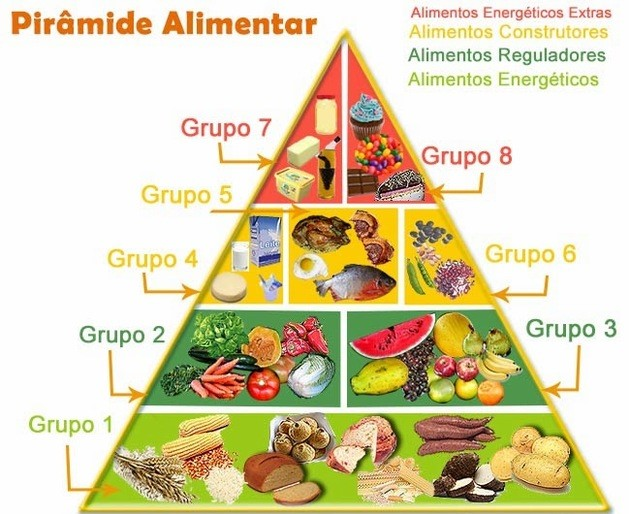

A pirâmide alimentar nos orienta a entender as proporções de cada grupo de alimento. A atual pirâmide brasileira é dividida em oito grupos relacionados com quatro níveis, são eles:
• Alimentos energéticos: grupo 1 (carboidratos);
•Alimentos reguladores: grupo 2 (verduras e legumes) e grupo 3 (frutas);
• Alimentos construtores: grupo 4 (leites e derivados), grupo 5 (carnes e ovos) e grupo 6 (leguminosas e oleaginosas);
• Alimentos energéticos extras: grupo 7 (óleos e gorduras) e grupo 8 (açúcares e doces).
No grupo 1 estão os carboidratos, que fornecem energia, fibras, vitaminas e minerais. Como quase todos os carboidratos viram açúcar, a melhor opção é consumi-los em suas versões integrais, já que não são tão processados, e também auxiliam para uma absorção mais lenta, o que mantém a fome sob controle.
No grupo 2 estão as verduras e legumes que são responsáveis para que haja uma boa ingestão de fibras e também outros nutrientes que são responsáveis pelo funcionamento do organismo e crescimento do corpo. As frutas, que fazem parte do grupo 3, possuem açúcar e por isso é importante que o seu consumo seja moderado.
No grupo 4 são encontrados leites e derivados que são ricos em cálcio, proteínas e vitaminas A e D. Mas as versões mais gordurosas destes devem ser evitadas, algo que pode ajudar a descobrir o que tem mais gordura é que quanto mais amarelo o queijo, mais gordura ele possui.
No grupo 5, onde se encontram as carnes, ovos e também leguminosas e oleaginosas, que são do grupo 6, são fontes de proteína e também são responsáveis pela construção e reparação de tecidos. As proteínas que são de origem animal, como as carnes vermelhas e brancas (aves, peixes), são fontes de vitaminas do complexo B e minerais. E além das proteínas de origem animal, existem as proteínas vegetais, que podem ser adquiridas com feijões (de todos os tipos), lentilha, ervilha, soja, grão de bico.
No topo da pirâmide, grupos 7 e 8, estão as gorduras e os doces, que devem ser consumidos menos, por exemplo, alimentos como biscoito, salgadinho tem uma quantidade bem maior de gordura do que é recomendado.